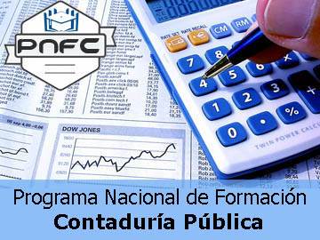
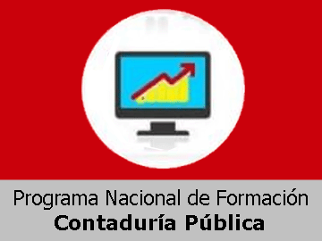

Perfil de la Carrera:

La contabilidad pública es una carrera fascinante que te permite ser el arquitecto financiero de las organizaciones!
Esta es una disciplina que se encarga de registrar, clasificar, resumir y analizar las operaciones financieras de una empresa,
organización o persona. En pocas palabras, los contadores públicos son los guardianes de la información financiera.
¿A quien va dirigido?
-
¿Te apasionan los números, el análisis y tienes un espíritu crítico? La carrera de Contaduría Pública es ideal para ti si buscas
una profesión que combine el rigor analítico con la toma de decisiones estratégicas. Aprenderás a gestionar
la información financiera de empresas y organizaciones, contribuyendo al éxito de los negocios.
-
La Contaduría Pública es la carrera perfecta para aquellos que desean desarrollar habilidades como
el análisis financiero, la resolución de problemas, la toma de decisiones y la comunicación efectiva.
Si te gusta trabajar con datos y números, y buscas una profesión con un alto nivel de responsabilidad,
esta es tu oportunidad.
Informacion sobre los trayectos:
La carrera de Contaduría Pública te ofrece múltiples caminos para alcanzar el éxito profesional. En nuestra institución,
hemos diseñado cuatro trayectos especializados que te permitirán desarrollar las habilidades necesarias para destacar en el dinámico mundo de las finanzas.
Certificados y titulos:

Aula virtual:

Plan Rector:
